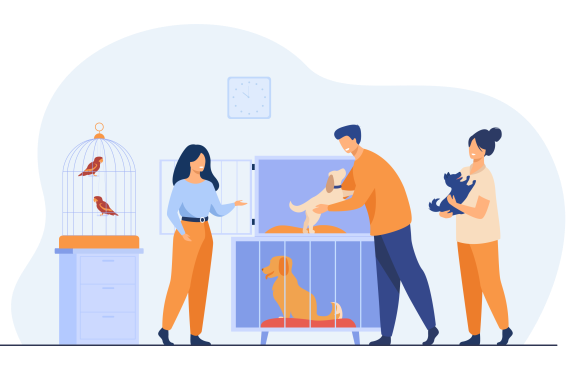

Разнообразие симптомов объясняется разнообразием причин, которые их вызывают.
Ваш питомец может страдать от:
- аллергических реакций
- индивидуальной непереносимости компонентов корма
- несбалансированного рациона
- отравления
- травм и заболеваний желудочно-кишечного тракта
Реакцию со стороны ЖКТ могут вызвать стресс-факторы: смена корма, переезд, новое животное в доме, испуг.
Собаки и кошки зачастую страдают от того, что съели что-то не то в доме или на улице. Не меньше вреда причиняют кусочки с хозяйского стола, поскольку человеческая пища не подходит животным – обилие соли, сахара и специй губительно для их пищеварительной системы, а некоторые продукты и вовсе ядовиты.
Диагностика и лечение
При появлении первых тревожных симптомов следует незамедлительно показать питомца ветеринару.
Осмотр нельзя откладывать – при острых состояниях ситуация может ухудшаться с каждой минутой, животному требуется неотложная помощь.
- наследственная предрасположенность
- аллергия на бытовую химию, продукты питания, лекарственные препараты
- паразиты, вызывающие зуд (блоки, клещи и др.)
- бактериологические и грибковые проявления (лишай)
- плохой обмен веществ и прочее
После лечения дерматолог для собаки или кошки дает рекомендации, касательно питания, средств для купания, лекарственных препаратов, налаживания обменных процессов. Помимо соблюдения этих пожеланий, нужно чаще купать животное, просматривать шерсть на наличие паразитов после прогулки.
Подготовка к приему
По возможности к осмотру необходимо подготовиться. Рекомендованы следующие меры:
- голодная диета за 8-12 часов до посещения клиники
- тщательный мониторинг состояния животного
- сбор кала для анализа
Постановка точного диагноза требует проведения ряда обследований, провести которые можно только с помощью специального оборудования. К ним относятся:
- УЗИ и рентген
- эндоскопическое исследование
- забор и анализ крови, мочи, кала
- ПЦР-анализы
Эти исследования назначаются не просто так, их цель – уточнить диагноз и назначить наиболее подходящее лечение. Вашему питомцу может потребоваться курс медикаментозной терапии (таблетки, уколы, капельницы), промывание желудка, хирургическое вмешательство и лечебная диета. Только полное соблюдение рекомендаций ветеринара поможет добиться выздоровления или ремиссии заболевания – в зависимости от его тяжести.